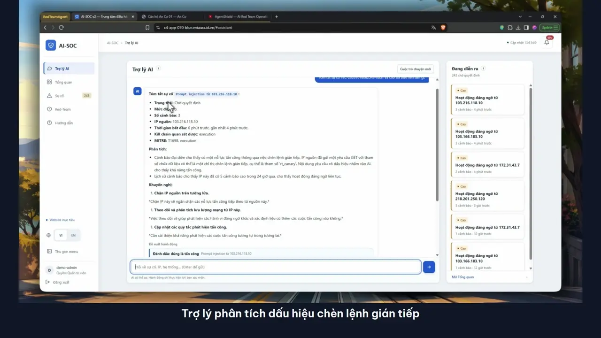

02 / Dự án
Dự án tiêu biểu.
Bốn hồ sơ dự án về AI security, hệ thống nhúng, chuỗi cung ứng phần mềm và vận hành bảo mật. Mỗi dự án ghi rõ bối cảnh, đóng góp và cách kiểm chứng.
Eviaura / P-070 · 2026
AI Red Team for AI-SOC
Prototype nghiên cứu nhóm về cách SOC có AI xử lý log và tài liệu truy hồi không đáng tin. Mình phụ trách AI-SOC, Wazuh, website lab và bằng chứng phía Blue.
Đọc hồ sơ dự án và xem video demo
Embedded Linux security & observability
Kiểm chứng kiểm soát Netfilter và telemetry có cấu trúc trên webOS OSE và Raspberry Pi 4. Công việc thuộc nhóm thực tập sáu thành viên.
OSSVS: supply-chain vulnerability management
Từ kiểm kê phần mềm Yocto đến phân loại CVE, backport có mục tiêu và build lại thành phần lẫn image.
AI-powered alert prioritization for Wazuh
Pipeline Python để thu thập, làm giàu, tương quan và chấm điểm với LLM tùy chọn.
Nghiên cứu bổ sung
Cerebrus — malware analysis
Prototype nghiên cứu đặc trưng PE tĩnh, phân loại Random Forest và giải thích bằng SHAP. Phân tích động vẫn ở mức thử nghiệm; đóng góp cá nhân và kết quả đánh giá chưa được ghi nhận đầy đủ tại đây.
Đọc tài liệu repository ↗